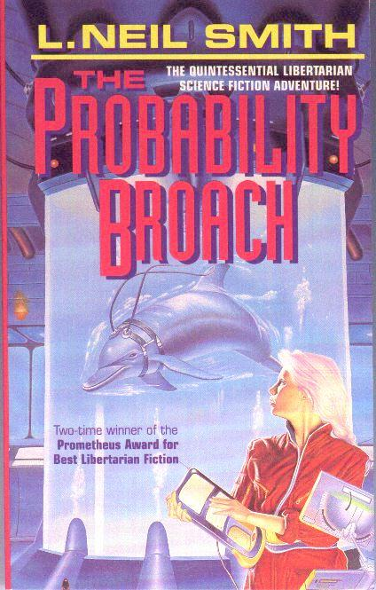

The Probability Broach
by L. Neil Smith
The book that
started it all. In a deadly conflict with murderous federal agents,
Denver homicide detective Win Bear is accidentally blown "sideways"
in time, into the "North American Confederacy", where the Whiskey
Rebellion succeeded in 1794 and government has grown less powerful
ever since.
1980/81
Prometheus Award winner, republished by Tor Books in 1996.
(See also
"The Spirit of Exmas Sideways", Alternatives, edited by
Robert and Pamela Crippen Adams, Baen Books, 1989. Trying to make a
place for himself in the stateless North American Confederacy, Win Bear
discovers the many joys and difficulties of absolute self-ownership.)
New York: A Tor Book, A Tom Doherty Associates Book, 1996
305 pages, mass-market paperback
Library of Congress Catalog Card Number: [not given]
ISBN 0-812-53875-7
First Tor edition: October 1996
Cover art by Peter Peebles
A scan of a copy of the cover proof.